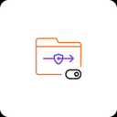

Smart Split Proxy
VPN سراسری را خاموش کنید و پروکسی محلی فیلترشکن را اینجا بگذارید. سایتهای ایرانی مستقیم میمانند و بقیه از تونل عبور میکنند.
آدرس پروکسی محلی نرمافزار فیلترشکن
پیشفرضها برای سایتهای ایرانی
اگر تونل محلی قطع شود چه اتفاقی بیفتد
مسیرهایی که در پاپآپ برای هر سایت انتخاب کردهای
وقتی برای سایتی در پاپآپ «مستقیم» یا «با پروکسی» را بزنی، آن تصمیم اینجا ذخیره میشود و روی همهٔ قوانین خودکار اولویت دارد.
هنوز چیزی یاد نگرفتهای.
هر خط یک دامنه — بدون تونل باز میشود
هر خط یک دامنه — حتی اگر سایت ایرانی باشد از تونل رد میشود
ذخیره شد